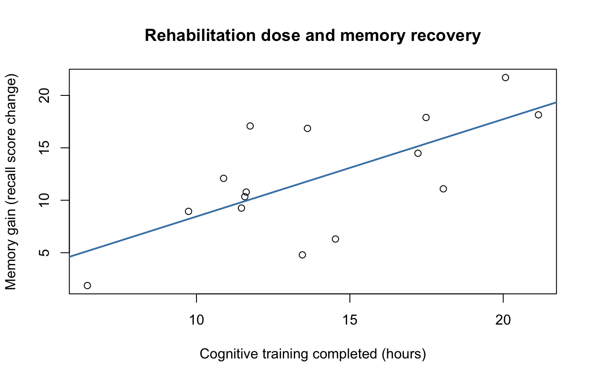
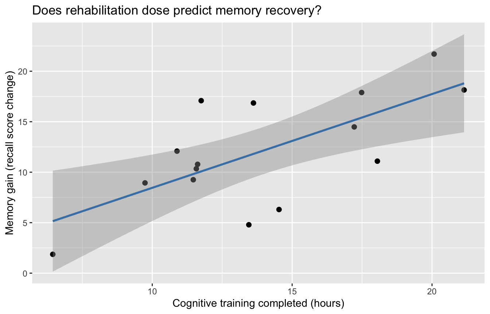

library(psych)
library(ggplot2)
Attaching package: 'ggplot2'The following objects are masked from 'package:psych':
%+%, alpharm(list = ls())Statistics for brain and cognitive sciences (CN2)
The script simulates its own data, so it needs nothing else: open it in RStudio and run it line by line.
Context:
Cognitive rehabilitation is a core intervention in clinical neuropsychology. Patients recovering from acquired brain injury (e.g. stroke, TBI) undergo structured cognitive training programmes aimed at restoring everyday function.
Here we ask: does the number of completed training hours predict the gain in episodic memory performance observed at the end of rehabilitation? Memory gain is operationalised as the change score on a standardised word-list recall test (post-treatment minus pre-treatment, in raw score points). A positive gain means improvement.
You will see:
n <- 15 # small rehabilitation cohort — easy to inspect
alpha_T <- 2.0 # true intercept: expected gain with zero training hours (baseline drift)
beta_T <- 0.8 # true slope: each extra training hour gains 0.8 recall points on average
sd_error <- 3.0 # individual variability around the true line
mu_x <- 12 # mean training hours completed across patients
sigma_x <- 4 # SD of training hours
set.seed(42)
trainingHours <- rnorm(n, mu_x, sigma_x)
memoryGain <- alpha_T + beta_T * trainingHours + rnorm(n, 0, sd_error)
dataRehab <- data.frame(
memoryGain = memoryGain, # outcome Y (recall score change, points)
trainingHours = trainingHours # predictor X (hours of cognitive training completed)
)
# quick look
str(dataRehab)'data.frame': 15 obs. of 2 variables:
$ memoryGain : num 17.89 8.94 4.79 6.3 16.85 ...
$ trainingHours: num 17.48 9.74 13.45 14.53 13.62 ...
`geom_smooth()` using formula = 'y ~ x'
Call:
lm(formula = memoryGain ~ trainingHours, data = dataRehab)
Coefficients:
(Intercept) trainingHours
-0.8332 0.9286
Call:
lm(formula = memoryGain ~ trainingHours, data = dataRehab)
Residuals:
Min 1Q Median 3Q Max
-6.8659 -1.9786 0.4249 2.6534 7.0081
Coefficients:
Estimate Std. Error t value Pr(>|t|)
(Intercept) -0.8332 3.9555 -0.211 0.83643
trainingHours 0.9286 0.2730 3.401 0.00473 **
---
Signif. codes: 0 '***' 0.001 '**' 0.01 '*' 0.05 '.' 0.1 ' ' 1
Residual standard error: 4.189 on 13 degrees of freedom
Multiple R-squared: 0.4709, Adjusted R-squared: 0.4302
F-statistic: 11.57 on 1 and 13 DF, p-value: 0.004729 memoryGain trainingHours
12.10837 13.93694 memoryGain trainingHours
5.549393 4.100973 [1] 0.6862163[1] 0.9285805[1] -0.8332003 (Intercept) trainingHours
-0.8332003 0.9285805 fitted_vals <- hat_alpha + hat_beta * dataRehab$trainingHours
residual_vals <- dataRehab$memoryGain - fitted_vals
SS_Tot <- unname((n - 1) * stdvs["memoryGain"]^2) # total variability in Y
SS_Reg <- sum((fitted_vals - means["memoryGain"])^2) # explained by training hours
SS_Res <- sum(residual_vals^2) # unexplained (residuals)
SS_Tot[1] 431.1407[1] 203.021[1] 228.1197[1] TRUE[1] 0.4708928